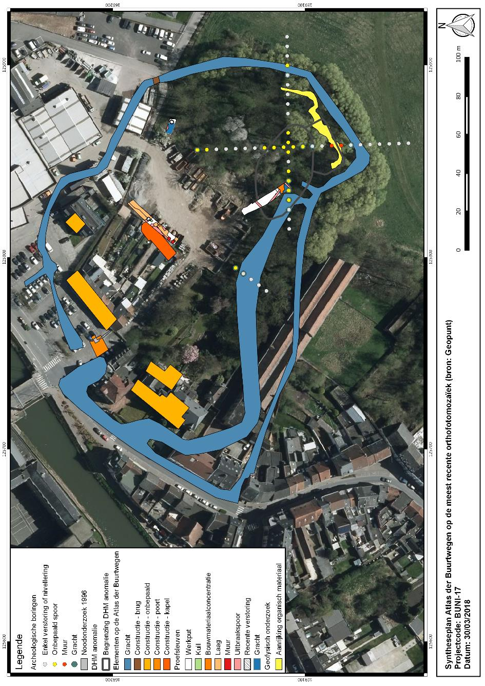

<div class="text_center_fullscreen">
  <div class="home_inner">
    <div class="home_nav_links">
      <br> Focusing on preventing floods, rebuilding concrete reclaimed waterways, and highlighting the site of the medieval castle that was still hidden in the area, the project is located in Ninove, Flanders. To combat floods, a flood prevention barrier (bike path) and a buffer zone (floodable park) in which the existing Dender water body in the urban fabric can expand have been considered. The Burcht Ninove archaeological site and wide green meadows are suitable for the buffer zone. The park to be designed will not only provide breathing space for the town but also create an area where the flood-causing Dender river can expand and drain.<br> 

<br> The data extracted from the Burcht Ninove archeological excavation report was used to locate the ditch and mound. The chapel, gates, and the path to the hill in the area are distinguished by different vegetation, materials, and leveling. The intention of the design is not the revival of the past, but the fact that some traces of historical importance take place in the area, and shape the design. The site of the old ditch was used as a new body of water, and the soil (depth 1/1.2 meters) from this excavation was used in the construction of the mound to be raised in the field. 3210 m3 of soil is suitable for making a hill with a height of 4 meters. The most obvious intervention in the design is the walkway that follows the 19th-century Dender arms as a pathway. Another thing evaluated on the site is the former textile factory Moeremanssite. Since it is a structure where different activities related to the city and the park can find their place, the walking path is connected to this building.<br> 

<br> Concrete remains to be obtained from the naturalization works of the canal will find a place in the area again. An ancient method, gabion was also seen as an opportunity to uncover and reuse materials in the field. In addition, it was desired to ensure that the new design would not affect the works in case of any future changes or reuse of the excavation area. The most profound intervention at the site will be the opening of new water bodies.<br> 

      <br>
      Site: Ninove, BE
    </div>
    
<iframe src="https://www.behance.net/embed/project/177218143?ilo0=1" height="316" width="404" allowfullscreen lazyload frameborder="0" allow="clipboard-write" refererPolicy="strict-origin-when-cross-origin"></iframe>  </div>
</div>

